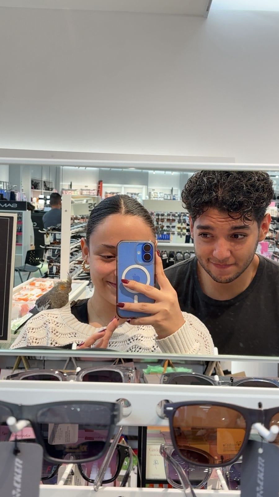
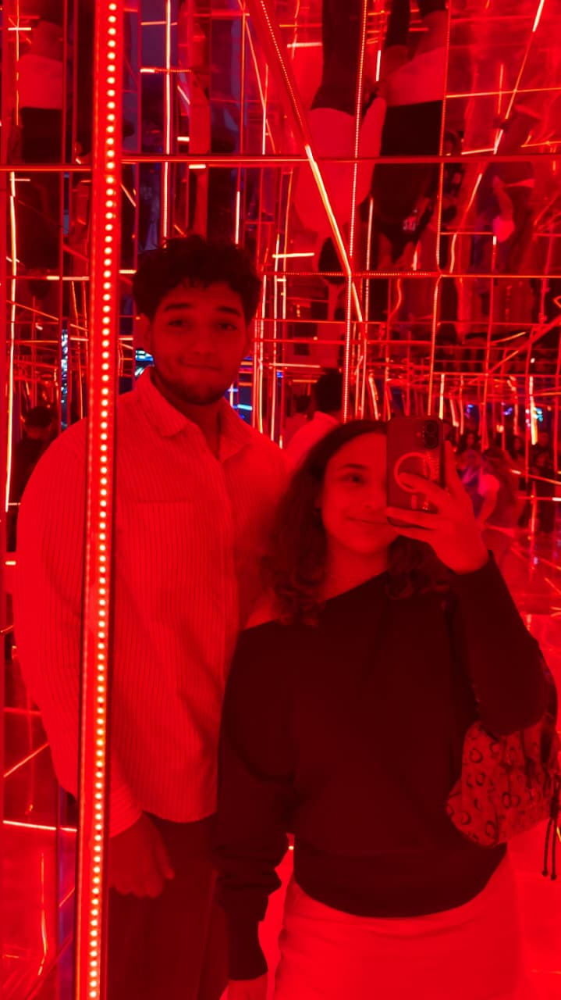
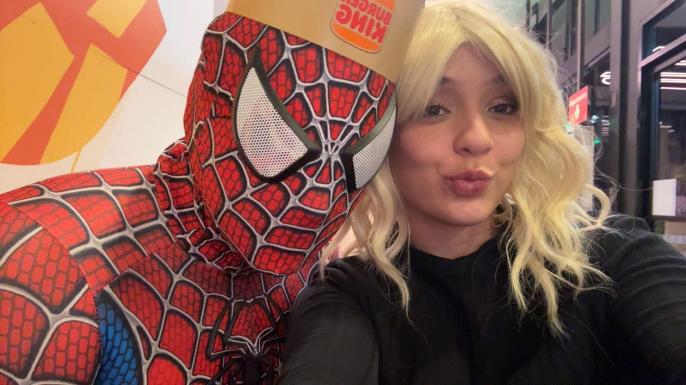
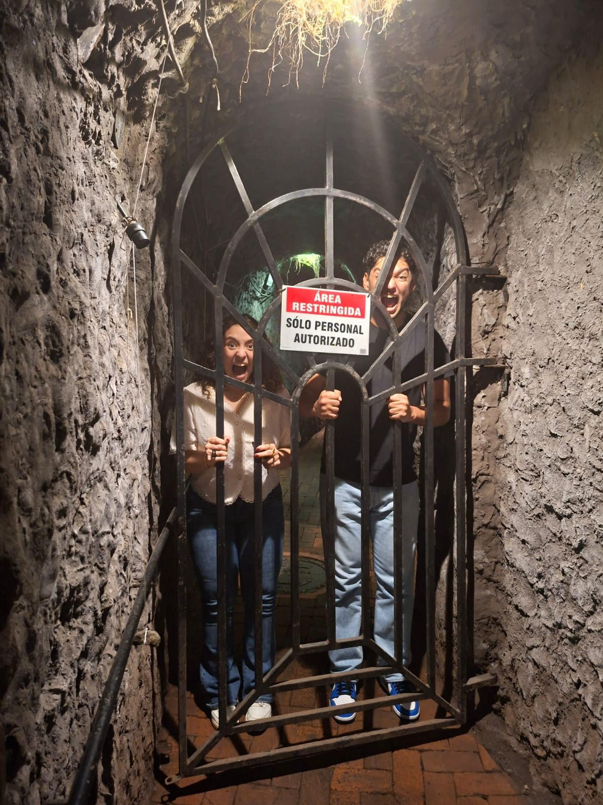

Melissa
A veces siento que decirle “la amo” se queda demasiado pequeño para explicar todo lo que siento por usted. Porque lo que siento por usted no nació solamente de los días bonitos, de los mensajes de buenos días, de las llamadas, de los abrazos, de las risas o de todos esos pequeños momentos que hemos compartido. La amo también conociendo nuestra historia completa. Conociendo lo bonito, pero también lo difícil. Conociendo las heridas, las dudas, los momentos en los que ninguno de los dos supo muy bien qué hacer con todo lo que estaba sintiendo.
Y quizás eso es lo que hace que hoy mi amor por usted sea tan profundo.
Hemos vivido cosas que pudieron habernos separado. Hemos tenido momentos en los que la confianza dolió, en los que hubo preguntas que pesaron demasiado y en los que yo mismo tuve que luchar contra mis pensamientos, mis inseguridades y mis miedos. Hubo cosas que me lastimaron muchísimo y que forman parte de nuestra historia. No quiero fingir que nunca pasaron, porque sería mentirme a mí mismo y también mentirle a usted.
Pero tampoco quiero que lo que nos hizo daño sea lo único que defina nuestra relación.
Porque cuando miro todo lo que hemos vivido, también veo que seguimos aquí.
Veo a la persona con la que sigo queriendo compartir mis días. A la persona a la que todavía quiero contarle cualquier tontería que me pase. A la persona que quiero ver, abrazar, hacer reír, molestar y acompañar. Veo nuestros “buenos días”, nuestros “buenas noches”, nuestros “te amo”, nuestras conversaciones, nuestros planes, nuestras bromas y hasta esas conversaciones tan simples que quizás para cualquier otra persona serían insignificantes, pero que para mí significan muchísimo porque son parte de nuestra vida.
Y últimamente hay algo que me toca especialmente el corazón: pensar en un futuro con usted.
Pensar en nosotros viviendo juntos, organizando nuestras cosas, haciendo cuentas, construyendo poco a poco una vida que sea nuestra. No porque crea que todo será perfecto, sino porque cuando pienso en el futuro, todavía aparezco junto a usted.
Y eso dice muchísimo de lo que siento.
Yo no la amo porque nuestra historia haya sido perfecta. La amo porque, incluso después de conocer las partes difíciles de nuestra historia, mi corazón todavía quiere elegirla para compartir la vida.
La amo por la persona que es, pero también por todo lo que hemos construido juntos. Por cada recuerdo que tenemos. Por cada momento en el que hemos sido felices. Por cada vez que nos hemos buscado después de un día difícil. Por cada abrazo que me hizo sentir que estaba exactamente donde quería estar.
La amo de una manera que a veces hasta me cuesta explicar.
Y quiero que sepa algo: no quiero amarla solamente cuando todo está bien. Quiero aprender a amarla también cuando las cosas sean difíciles. Quiero aprender a escucharla mejor, entenderla mejor, cuidarla mejor y también decirle cuando algo me duele, sin convertir ese dolor en una guerra entre nosotros.
No quiero una relación donde simplemente nos acostumbremos a estar juntos.
Quiero una relación donde sigamos escogiendo estar juntos.
Quiero que algún día podamos mirar hacia atrás y decir: “Pasamos por muchísimo, pero lo construimos juntos”.
No sé qué nos va a traer la vida. No sé cómo vamos a cambiar, qué problemas vamos a enfrentar o qué cosas tendremos que aprender todavía. Pero sí sé algo: hoy, con todo lo que conozco de nuestra historia, la amo.
La amo muchísimo.
Y si alguna vez mis miedos, mis inseguridades o mis errores hicieron que usted no pudiera sentir cuánto la amo, quiero que entienda que detrás de todo eso siempre ha existido un sentimiento muy real: el miedo de perder a alguien que para mí significa demasiado.
No quiero que mi amor sea una prisión para usted ni que tenga que demostrarme constantemente que me ama. Quiero que mi amor sea un lugar donde usted pueda sentirse querida, acompañada y libre de ser usted misma.
Quiero seguir conociéndola incluso después de tantos años. Quiero descubrir nuevas versiones de usted. Quiero estar cuando cumpla sus metas, cuando tenga días increíbles y también cuando tenga días horribles. Quiero celebrar sus logros, apoyarla cuando algo no salga bien y simplemente estar ahí cuando no necesite soluciones, sino compañía.
Porque para mí amar a alguien no es solamente decir “la amo”.
Es querer estar.
Y yo quiero estar.
Quiero estar en sus días buenos y en sus días malos. Quiero estar en las cosas grandes y en las pequeñas. Quiero seguir haciendo recuerdos con usted. Quiero seguir riéndome con usted. Quiero seguir aprendiendo de nosotros.
Y sobre todo, quiero que sepa que, después de todo lo que hemos vivido, después de todo lo que hemos sentido y después de todas las vueltas que ha dado nuestra historia, todavía hay una parte de mí que cuando piensa en amor piensa en usted.
La amo, Melissa.
La amo por lo que hemos sido, por lo que somos y por todo lo que todavía podemos llegar a construir.
Y aunque sé que las palabras nunca van a alcanzar para explicarlo completamente, quiero seguir diciéndoselo, demostrándoselo y construyéndolo con usted.
La amo muchísimo, mi amor.
Nosotros



